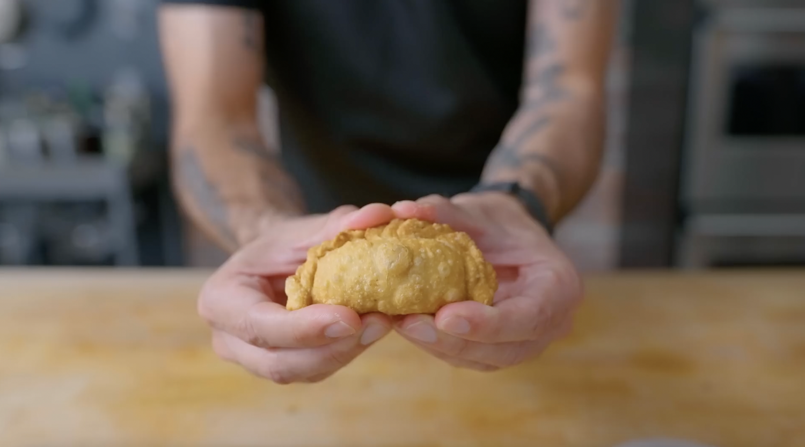

Empanadas

Description
Empanadas are one of those rare 'always-in-the-mood-for' foods - great for feeding a crowd
or even just one very hungry individual. Mix and match these fillings to suit your own taste!
Ingredients
Empanada Ingredients
- 500 g all purpose flour + more for dusting
- 1 ¼ tsp kosher salt
- 60 g unsalted butter, lard, or neutral oil, room temperature
- 250 - 300 g hot water (~180 °F)
- Beef Filling
- Cheese and Guava Filling
- As needed peanut oil (or fry oil of choice)
Beef Filling Ingredients
- 3 Tbsp cooking olive oil
- 1 large yellow onion, diced
- 2 garlic cloves, minced
- 2 tsp annatto powder (or sweet paprika)
- 1 tsp ground cumin
- 1 ½ tsp dried oregano
- 1 lb ground beef (~85% lean)
- To taste kosher salt
- To taste freshly ground black pepper
- 2 hard boiled eggs, chopped
Cheese and Guava Filling
- 8 oz Queso Blanco
- 6 oz guava paste
Steps